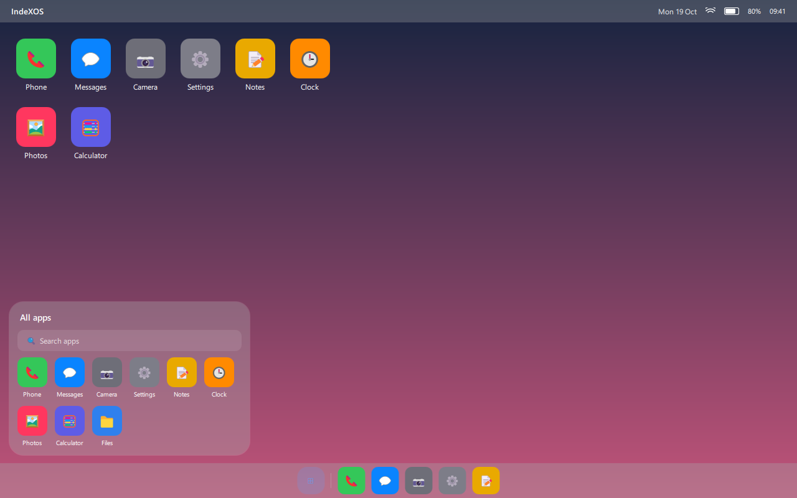

The idea
Interfaces are usually fixed. This one is data.
A phone normally ships with one interface and a few approved ways to decorate it. IndeXOS separates the shell from the way it looks. The shell knows what to draw — a status bar, a clock, an app grid, a dock, a navigation bar, a shade, an app switcher. The theme says how each of those is made: colour, material, blur, radius, size, position, motion.
That split is what makes the rest possible. A different theme is a different phone, without a different build. A desktop or tablet layout is more of the same data, not a port. And because the values are checked before they are used, a theme written badly or maliciously cannot leave the system half-drawn.
How a theme becomes a screen
A .hui archive carries manifest.json, profile.json and any wallpapers, icons or fonts.
The loader checks the magic, the hashes, the types and the ranges. Hostile values are refused; loose ones are clamped.
The shell builds the surface from the profile. A swap that fails rolls back to the previous theme instead of showing a blank screen.
The hardware reports an attached dock, and the shell draws the matching surface — phone, desktop or tablet — from the same theme.
Three modes
The phone is the computer.
A phone has one screen and one way of holding it, so its interface leaves a lot unused. IndeXOS treats the device as the thing that stays the same while the shape of the workspace changes around it.
Plug in a dock and the phone becomes a desktop: a top bar, windows with title bars, a taskbar and a start menu. Slot it into the larger shell and it becomes a tablet, with a status bar, a dock and split view.
The hardware decides which surface is shown — a theme cannot force a mode. It can only decide how each mode looks, so the same visual language carries across all three.

Desktop surface with the start menu open — drawn by the shell from the theme.
The stack
What runs it, and what doesn't yet.
The shell is real software that runs today. The parts beneath it on a phone are planned, and this page says which is which.
Qt/QML shell
Reads the active profile and draws the phone, desktop or tablet surface. Runs as a window on a PC with Qt 6.
Linux core
A Linux kernel and a Wayland compositor underneath the shell. This is the base of the device build.
Windows apps
Native .exe support on IndeX hardware, through translation layers tuned for the device.
Android apps
A runtime bridge so the phone can run apps from the ecosystem people already use.
Distribution
A closed, native ecosystem.
IndeXOS is not planned to ship as an open-source image, a generic custom ROM, or a public installer for third-party smartphones. Thermal behaviour, battery life and interface performance are tuned for specific hardware, and those guarantees do not survive being flashed onto whatever phone is at hand.
What is shared is the part that makes themes possible: the profile format, the loader and the Designer, so themes can be made and tested before there is a phone to put them on.
The OS, the hardware and the emulation stack stay internal.
Built by
IndeXOS is designed and built by J.B. Status, design notes and the parts that are finished are published on this site and in the project's GitHub repository.
Questions, feedback and theme ideas are welcome by email.
See what is actually finished.
The roadmap lists what works, what is being built next, and what is still only a drawing.